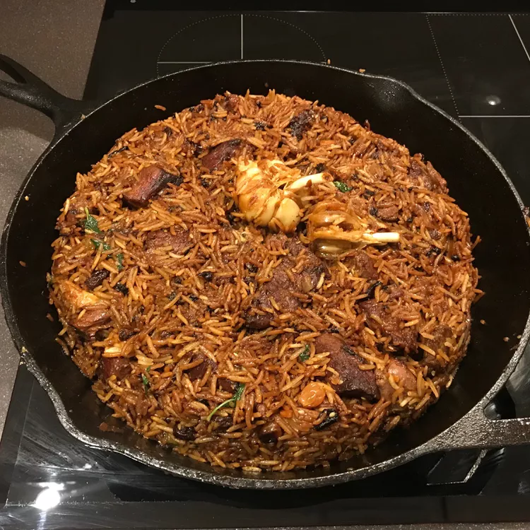

Pilaf

Description
Pilaf is a rice dish, usually sautéed, or in some regions, a wheat dish, whose recipe usually involves cooking in stock or broth, adding spices, and other ingredients such as vegetables or meat, and employing some technique for achieving cooked grains that do not adhere to each other.
Pilaf and similar dishes are common to Middle Eastern, West Asian, Balkan, Caribbean, South Caucasian, Central Asian, East African, Eastern European, Latin American, Maritime Southeast Asia, and South Asian cuisines; in these areas, they are regarded as staple dishes.
Ingredients
- 2 cups basmati rice
- 4 heads garlic, whole
- ½ cup vegetable oil
- 2 pounds boneless leg of lamb, cut into 3-inch pieces
- 2 large onions, thinly sliced
Steps
- Place basmati rice in a large bowl and cover with warm water. Set aside. Wash heads of garlic. Set aside.
- Heat vegetable oil in a dutch oven or large skillet over high heat until smoking, then add lamb, turning occasionally until the lamb is evenly browned, about 10 minutes. Stir in the onions;
- Wash and drain basmati rice with hot water. Pour cleaned rice over the lamb mixture in an even layer.